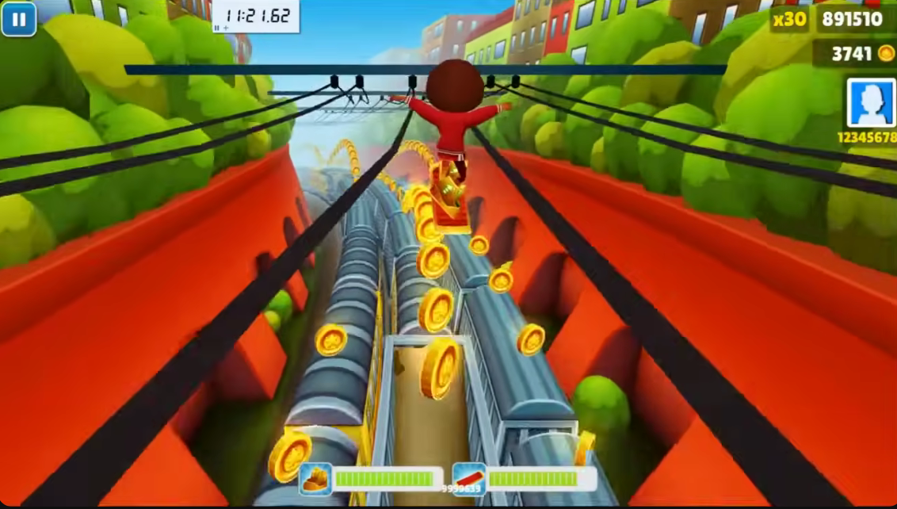
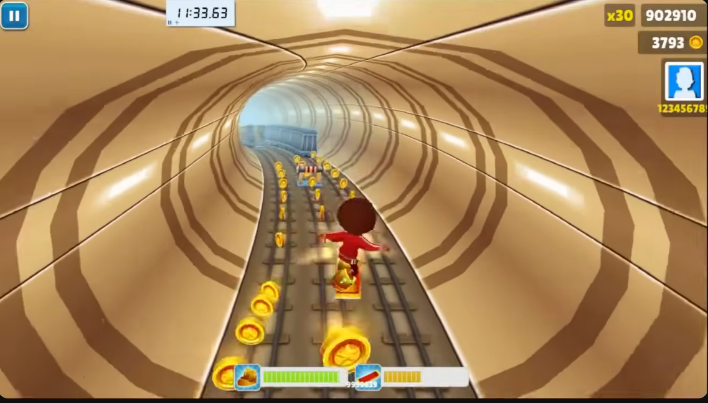
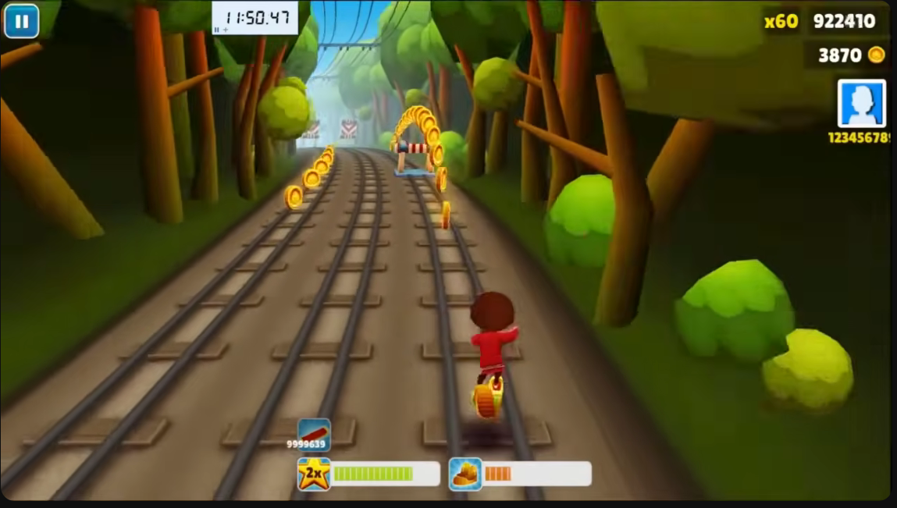
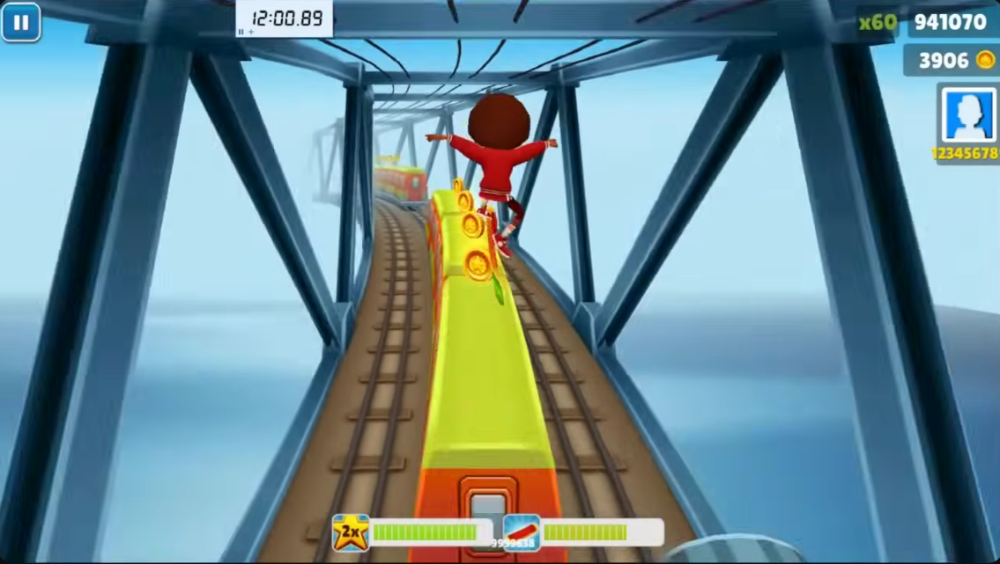
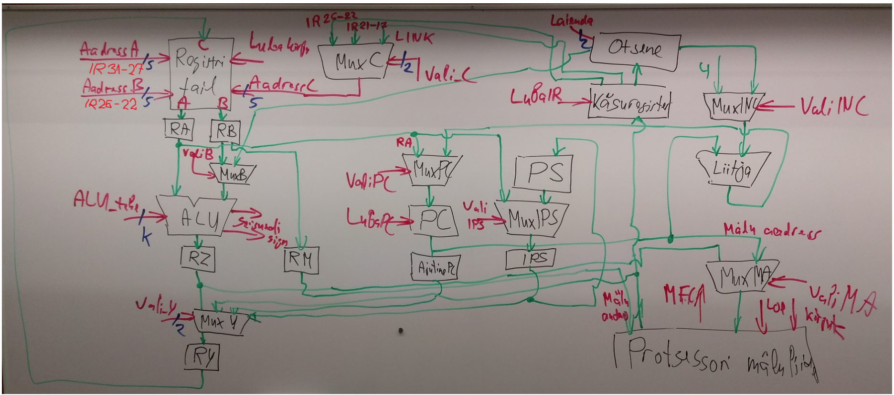

Loengus käsitlesime RISC-protsessorit, mille põhimõtte skeem on kujutatud järgmisel joonisel.
Selle RISC-protsessori käsud on 32-bitised, käsud täidetakse mäluviivituste puudumisel viie takti jooksul.
Registrite adresseerimiseks saame käsus kasutada viit bitti (iga adresseeritava registri kohta).
Multiplekserite juhtsignaalid, joonisel punase värviga, aktiveerivad sisendeid selliselt, et
Testi alguses toodud joonisel (loengu lõpu pilt audika tahvlist) kujutatud RISC protsessoril tehakse järgmine masinkoodi tehe
00001 00010 01111 00000000000000011
Juhtsignaalid:
Mis on registri R15 sisu selle käsu täitmise järel?
Protsessori registrite senine sisu oli järgmine:
R0 = 0
R1 = 1286
R2 = 1634
R3 = 6422
R4 = 1059
R5 = 1373
...
R15 = 5789
...
R31 = 1012
Testi alguses toodud joonisel (loengu lõpu pilt audika tahvlist) kujutatud RISC protsessoril tehakse järgmine masinkoodi tehe
00001 00010 01111 00000000000000011
Juhtsignaalid:
Mis on puhverregistri RY sisu selle käsu neljanda sammu (suhtlus mäluga) täitmise järel?
Protsessori registrite senine sisu oli järgmine:
R0 = 0
R1 = 3672
R2 = 2091
R3 = 1530
R4 = 5393
R5 = 4123
...
R15 = 7934
...
R31 = 4932
Käskude täitmise järjekord RISC protsessoris on järgmine.
Bitijadast tulevate registrite tehe on samas järjekorras: esimene + teine ja tulemus kirjutatakse kolmandasse.
Tahvli vaatamine on selles ülesandes vajalik – otsi üles RY.
Vali_Y näitab, kust tuleb RY-isse kirjutatav väärtus.
Vali_Y 0 valib vasakpoolseima sisendi, 1 vasakult teise jne.
Kontrolli oma vastust
Veebilehe koostajad: Mia Grossthal, Sandra Karo

Palun pane meie Githubi projektile tärn! 💗